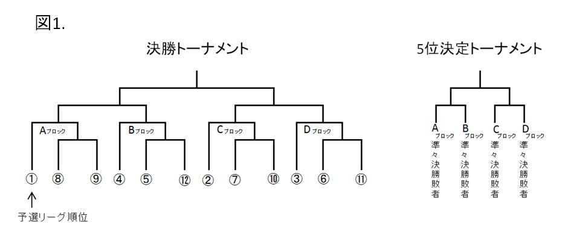

2017年9月27日改訂
第1条 本規程において、次の各号に掲げる用語の意義は、当該各号に定めるところによる。
(目的)
第2条 本規程は、本大会の参加資格、及び試合・対戦の進行方法について定めることを目的とする。
(思考部)
第3条 参加ソフトは、思考部について、自力で十分な工夫を施したものに限る。
2 ソフト開発者は一つの参加ソフトにのみ参加することができる。
3 序盤から故意に手数を稼ぎ、引き分けを狙うソフトは参加できないものとする。
4 大会中に立会人が、序盤から故意に手数を稼ぎ引き分けを狙っていると判断したソフトは、以降の対局を不戦敗とする。
(使用可能ライブラリ)
第4条 参加ソフトは、使用可能ライブラリを使用することができる。
2 使用可能ライブラリは、改造して使うことができる。その場合も、その使用可能ライブラリを使用したこととなる。ただし、改造した使用可能ライブラリそのも
のは公開しなくて良い。
3 使用可能ライブラリを使用する場合、参加者は、応募時に使用したライブラリをバージョンも含め申請しなければならない。また、第8条に定めるアピール文書
に次の各号に掲げる内容を含めなければならない。
4 提出されたソースコードは審査のみに使用し、公開されない。
5 その後の開発の進捗により使用するライブラリのバージョンを変更した場合は主催者へ通知すること。
(必須機能)
第5条 参加ソフトは、次の各号に掲げる機能を持たなければならない。
（参
考）
shogi-serverによる「評価値と読筋を記録する拡張」をさらに拡張し、CSA通信プロトコル(TCP/IP)において１手毎の探索局面数も
送信しな ければならない。
クライアントは、指手に続けて,'*の後に評価値と読筋、最後に" #局面数"の文字列を追加し送信する。
（例）
+7776FU, '* 30
-
3334FU +2726FU #5000
上記例の場合は、
+7776FU
の指手を思考するにあたり探索局面数が
5000
であったことを示す。
USIプロトコルに基づいて思考部の開発を行っているソフト開発者向けに、同拡張に対応した特別バージョンのGUIアプリケーション「将
棋所」を主催者 から別途希望者に配布する。
(推奨機能)
第6条 参加ソフトは、次の各号に掲げる機能を持つことが推奨される。ただし、機能を持たないことによって不利になることはない。
(実行機種)
第7条 参加ソフトを動かすマシンは、主催者が用意したものを使用する。
[マシン詳細]
(参加申込)
第8条 参加者は、2017年9月24日(日)迄に指定の応募フォームから応募を行い、その後主催者より送られる申込書を別途提出しなくてはならない。
2 代表者名、及びソフト開発者・開発予定者全員の氏名は公表する。
3 参加者は、ソフト開発者・開発予定者全員に本大会出場についての承認を得ていなければならない。
4 参加者は、第3条を満たすことをアピールする文書を指定された期日までに主催者に提出するものとする。
5 提出されたアピール文書は、本イベントサイト内、番組内で公開される可能性がある。
(参加の可否の判定)
第9条 参加ソフトが第2章に定める参加資格を満たさない場合、および第3章に定める参加申込手続きを怠った場合、主催者は参加の差し止めを行う。
2 参加ソフトが参加資格を満たしているかどうかの判断が難しい場合、最終的な参加の可否は主催者が判定する。
3 第2章の判定のため、主催者は参加ソフトのソースコードや使用可能ライブラリ等との対戦結果の提出を要求することがある。
(予選・決勝の方式)
第10条 本大会では、予選リーグ・決勝トーナメントを行う。
2 予選リーグの上位12ソフトが決勝トーナメントへ進む。
3 コンピュータ予選参加チーム数が16以下の場合には一次予選は行わず、決勝トーナメントから大会を行う。
4 予選リーグにおいて、その日の受付締切時刻までで確定した参加ソフトが奇数となった場合、対戦組み合わせにおいて余った1つのソフトを不戦勝として処理す
る。
(遅刻・参加辞退等の取り扱い)
第11条 参加辞退の場合、各大会の前々日の18時までに主催者まで連絡しなければならない。
2 受付締切時刻までに受付を済ませず、事務局への参加辞退又は遅刻の連絡もない場合、参加放棄となる。
3 その日の最初の対戦が開始された後、参加者が事務局に申請し、主催者がやむを得ない事情があると認める場合は、途中で棄権することができる。その場合、そ
の日 のそれ以降の対戦は不戦敗となる。
(予選リーグ組合せ)
第12条 1次予選リーグは完全スイス式で8回戦まで実施する。
2 完全スイス式とは、次の各号に掲げる規則に基づく組合せ法のことをいう。
3 予選リーグの各対局の手番は乱数で決定する。
(予選リーグ順位の決定)
第13条 順位は、引き分けを0.5勝0.5敗と換算した上で、次の各号に掲げる順に適用して決定する。
(決勝トーナメントの組み合わせ)
第14条 決勝トーナメントは、予選リーグの順位に基づき、図1の通りの組み合わせとする。ただし、参加チーム数が16以下の場合はその限りではない。 
(決勝トーナメント手番の決定)
第15条 決勝トーナメントの手番は、振り駒によって決定する。
2 決勝並列3番勝負では、第1局の先後を決めた後は、1局ごとに先後を入れ替えて対局を行う。
3 振り駒は、予選リーグの順位が上位の開発者が行う。
4 振り歩先（表〈歩〉の枚数が多い場合に駒を振った側が先手となる）
で行われる。
(決勝トーナメント順位の決定)
第16条 決勝トーナメントは、トーナメントで1位～4位を決め、準々決勝の敗者4ソフトで5位決定トーナメントを実施する。なお、3位と4位の決定は準決勝の敗者2ソフトで3位決定戦を行う。
(決勝の対局方法)
第17条 決勝トーナメントのうち決勝は、各将棋ソフト3台ずつのマシンを使用し、並列3番勝負を行う。
2 3組のマシンを用い逐次、同一時間帯に対局を開始する。その際、同一ソフトが稼働する3台のマシンの対局開始システム時刻が重複しないよう対局開始時刻に時間差を設ける、ないしはシステム時刻の設定を行う。
3 決勝に勝ち進んだ参加者は、追加で2台のマシンのセッティングに協力する。
4 セッティングに長時間かかる場合には、主催者と協議の上、対応を検討する。
(対戦の方法)
第18条 対戦は、すべて平手戦とする。
2 対戦開始予定時刻は、主催者がその10分前までに決定し発表する。
3 対戦は、対戦サーバを介して行う。
4 対戦開始の合図は対戦サーバから送られる。
5 遅刻・不在・マシントラブル等により、対戦開始予定時刻からの対戦開始が不可能な場合、対戦開始までの時間は、対戦開始が不可能な方の持ち時間から差し引かれる。
6 両者とも対戦開始が不可能な場合は、両者の持ち時間から差し引かれる。
7 その他状況については、内容に応じて主催者が判断をする。
8 対戦開始後は、参加ソフトの指し手の決定に影響を与える行為を人間が行ってはならない。
9 次の各号に掲げる操作は、参加ソフトの代表者、あるいはソフト開発者が行うものとする。
ただし、対戦開始予定時刻までに参加者が事務局に申請し、主催者が認め
た者
(以下「代理人」という)
が操作を行うこともできる。
(消費時間)
第19条 1手毎に、実際の消費時間を計測した上で秒未満を切り捨てたものを1手毎の消費時間とする。ただし、ある手の消費時間が1秒未満の場合、その手の消費時間は1秒とする。
すなわち、計測された消費時間をx秒、このルール上の消費時間をs秒と表わすとき、x<2であれば、s=1とする。
またnを2以上の自然数とするとき、n<=x< n+1であれば、s=nとする。
2 累積消費時間は、1手毎の消費時間を累積したものとする。
3 予選リーグの持ち時間は15分、持ち時間消費後は10秒将棋で対局を行う。
4 決勝トーナメントは持ち時間1時間切れ負けとする。
5 LAN対戦の場合は、対戦サーバが、1手毎の消費時間を計測し、累積消費時間も管理する。
6 対戦サーバが相手の指し手または対戦開始の文字列を送信し、それに対する指し手を受信するまでの時間が1手毎の消費時間となる。
7 ネットワークによる遅延も消費時間に含まれる。
8 手入力対戦の場合は、それぞれの参加ソフトの計測時間を用いる。
9 消費時間の計測や表示に不正があった場合、
立会人
が扱いを決定する。
(入玉宣言法)
第20条 1 次の各号に掲げる条件がすべて成立する場合、勝ちを宣言できる
(以下「入玉宣言」という)
。
1
つでも条件を満たしていない場合、宣言した方が負けとなる。
2 入玉宣言は、ソフトが行い、画面上に明示した上で「%KACHI」のコマンドを送信する。
(勝敗の決定)
第21条 勝敗は、次の各号に掲げる順で決定される。
2 勝敗は、それに基づく組合せの発表時、又はその日の試合結果発表時で確定する。 それ以降は、報告された結果に誤りがあっても、訂正することはできない。
(引き分けの判定)
第22条 予選リーグ、決勝トーナメント共に、256手を超えて、対局が続く場合、立会人がどちらのソフトの負けとも判定せず、千日手でもないときは、その対局を引き分けとする。
2 千日手は指し直さず、引き分けとする。ただし、連続王手の千日手(同一局面の最初と4回目の間の一方の指し手が王手のみだった場合)は、連続王手をかけていたほうが負けとなる。
3 千日手の判定は、LAN対戦の場合対戦サーバが行う。それ以外の場合は、立会人が判定する。
4 決勝トーナメントで引き分けが発生した場合、先後を入れ替えて、予選リーグと同じ持ち時間(15分秒読み10秒)で指し直し局を実施する。
5 決勝戦の並列3番勝負で引き分けが発生した場合は、引き分けとなった対戦のみ先後を入れ替えて、予選リーグと同じ持ち時間(15分、秒読み10秒)で指し直し局を実施する。
(立会人による勝敗判定)
第23条 次の各号に掲げる場合、立会人はそのソフトの負けと判定する。ただし、同時に両者がこの条件を満たした場合はその限りではない。
(棋譜)
第24条 本大会の各対戦の棋譜は、主催者の判断で、自由に使用や公開ができるものとする。
2 本大会参加者は、自身の参加ソフトの対局の棋譜に関しては、自由に使用公開できるものとする。
(賞金)
第25条 賞金は以下の通り
とする。
| 1位 | 300万円 |
| 2位 | 100万円 |
| 3位 | 70万円 |
| 4位 | 50万円 |
| 5位 | 30万円 |
2 賞金は2017年12月末日までに、株式会社ドワンゴより開発者へ支払われる。
3 業務上賞金の受領が難しい場合など、希望によって賞金を寄付金等へ振り替えることが出来る。`
(将棋放送・イベントへの協力)
第26条 本大会終了後、1位から5位となったソフトは、ドワンゴが主催する将棋放送・イベントでの使用において、主催者ならびに主催者の認める者に対してソフトウェアの使用を許諾するものとする。
2 1位から5位となったソフトは、株式会社ドワンゴにて保存される。
第27条 本大会のルールは、滞りなく大会運営を行う事を目的に予告なく変更する場合がある。
2 ルール変更時点で既に参加応募をしているソフト開発者へは主催者より個別に告知を行う。
※ 本ルールは 世界コンピュータ将棋選手権のルールを参考に作成されています 。